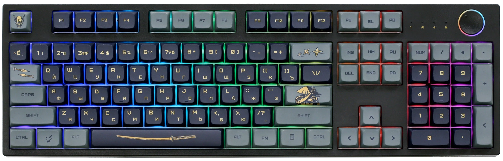

Ardor Katana
Цена: ~9 499 ₽ (28.05.2025)

Клавиатура ARDOR GAMING Katana [AG-ZD-104GT-XDA-HS-B] создана для игр. Она выполнена в корпусе черного цвета с самурайской тематикой и оснащена многоцветной светодиодной подсветкой RGB. Модель обладает полноразмерной раскладкой с 104 клавишами. Линейные механические переключатели Gateron Mint с укороченным ходом 2 мм и смазанными стабилизаторами обеспечивают четкий отклик с плавным срабатыванием. Ресурс 80 млн нажатий гарантирует стабильную работу.
Клавиатура поддерживает проводное и беспроводное подключение. В проводном режиме она синхронизируется посредством кабеля с интерфейсом USB. В беспроводном – с помощью радиоканальной технологии 2.4 ГГц и Bluetooth. Система Hot Swap упрощает замену переключателей. В автономном режиме питание ARDOR GAMING Katana осуществляется от встроенного аккумулятора.
Видео-обзор: https://www.youtube.com/watch?v=HpT1L5asshI
Купить можно тут: Ardor Katana